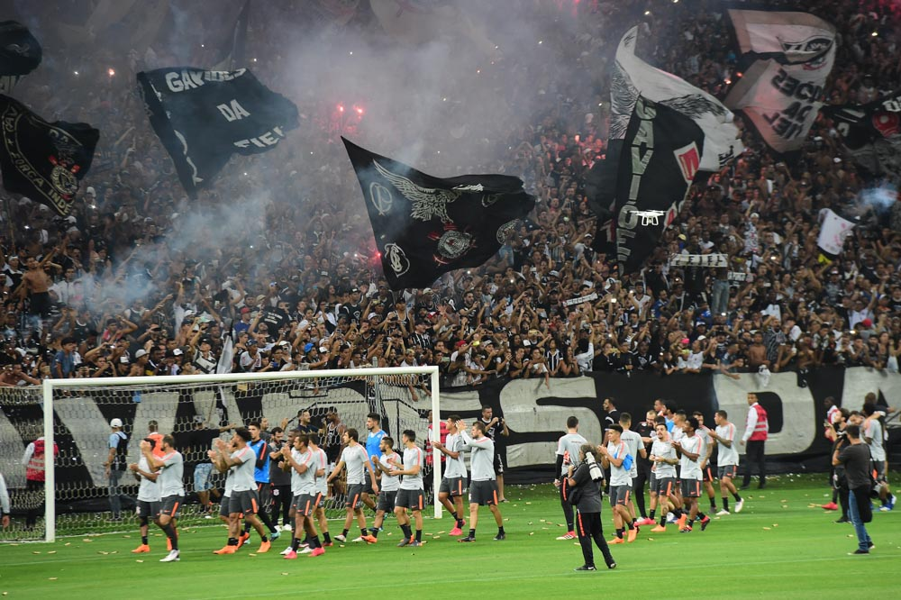
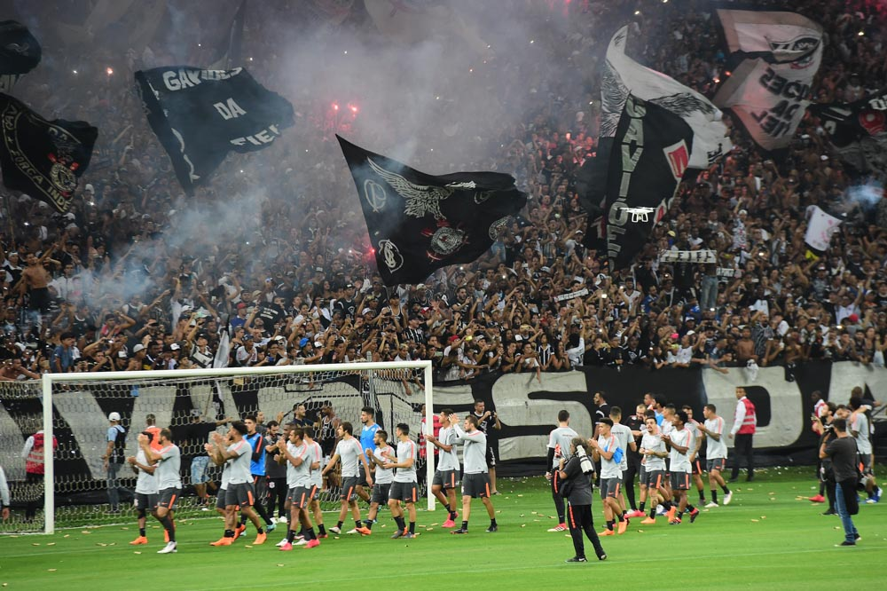

esporte mais conhecido do Brasil
futebol
todos sabem que o Brasilé o país do futebol. MasO futebol é um esporte coletivo que não tem sua origem bem definida,
uma vez que diversos jogos de bola semelhantes a ele já eram praticados por povos da antiguidade.Assim,
no ano de 1863 o esportista inglês Ebenezer Cobb Morley (1831-1924) e mais alguns colegas criaram 13 regras para o Football Association,
na Inglaterra. Esse momento foi o marco do nascimento do futebol
Nas duas copas seguintes (1934 e 1938) a Itália ficou com o título. Porém, entre os anos de 1942 e 1946, a competição foi suspensa em função da eclosão da Segunda Guerra Mundial. Em 1950, o Brasil foi escolhido para sediar a Copa do Mundo. Pentacampeã do mundo, a seleção brasileira tem um longo percurso na Copa do Mundo. A história do Mundial muitas vezes se confunde com a do Brasil, único time presente em todas as edições do torneio. Grandes nomes da maior competição de futebol do mundo vestiram a amarelinha e brilharam no torneio.
 
